k-Day 042｜Fitting初體驗
昨晚太焦慮，凌晨三點才真的睡著。早上九點醒來，看了手機，自行車老闆仍然沒有回覆訊息，收拾行李後果斷出發。
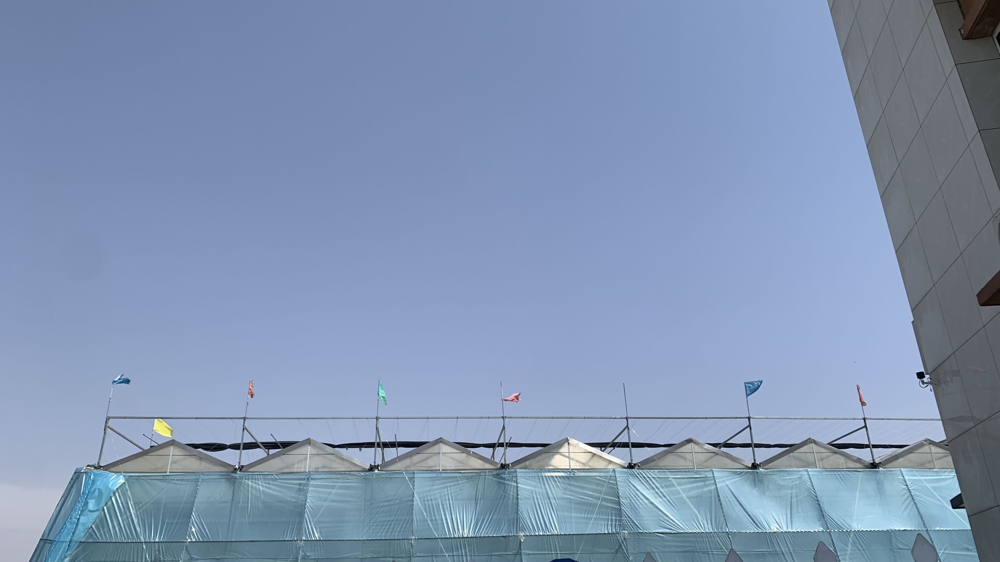
已經養成欣賞路邊旗子觀察風向的習慣，其實看柏油路上過馬路的樹葉們也可以知道今天又是西風偏北。一上車就發現兩邊握把的差異，右邊外擴的狀態沒有完全改善，於是右手手掌呈現往後凹的樣子。騎了10公里左右突然頭暈，於是先找了間公廁拉肚子，再到附近看起來乾淨的清真餐廳吃飯休息。
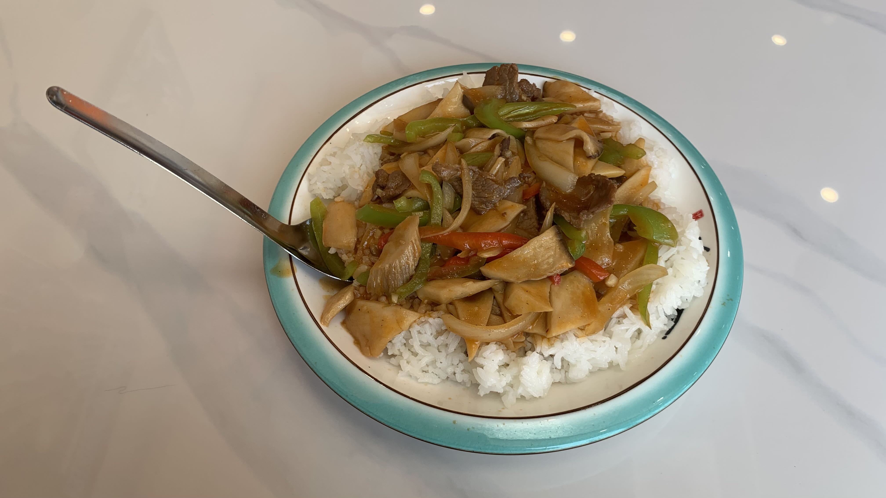
吃飽後出發，縣道仍然是縣道的樣子。穩定的上坡，穩定的下坡。
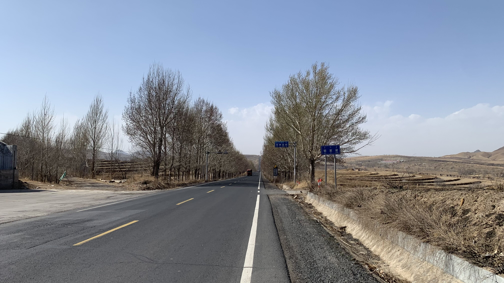
因為地貌的變化幅度太微妙，實在不確定今天看到的風景和前天有什麼不同。
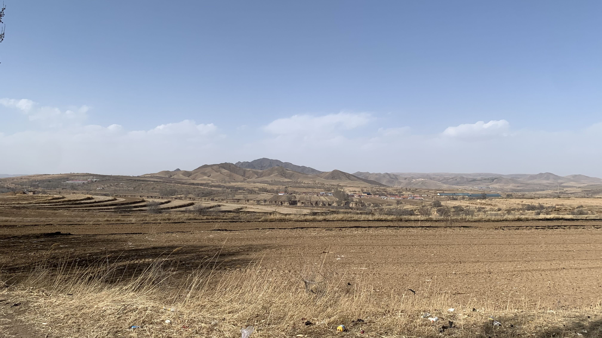
這樣的開闊感也許能算得上有些差異嗎？腳邊的垃圾倒是始終如一。
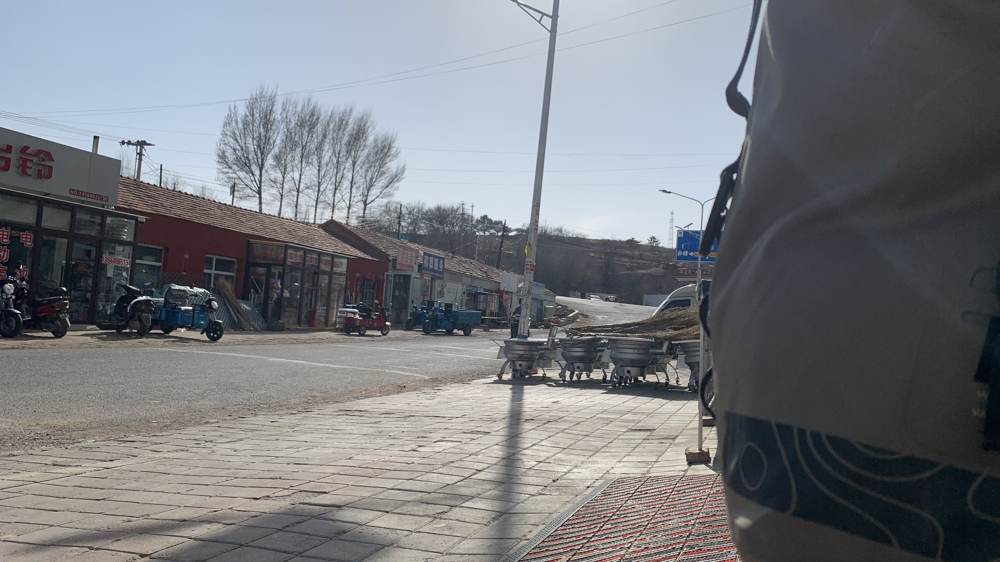
騎了二十多公里後，感覺頸椎有痛感，頭開始有點疼。於是躲到小路邊的超商買一瓶水和罐裝咖啡坐在陰影下休息。右手腕的姿勢往外凹得很痛，發現自己右肩比左肩高出不少。今天還是不要騎太遠，決定找個地方早點休息，再慢慢微調。
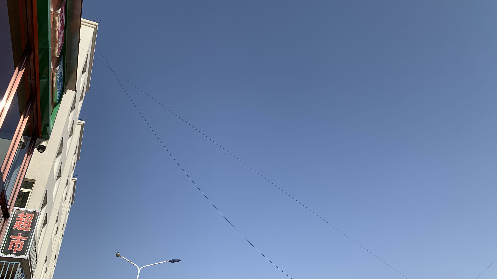
抬頭看看天空，真的是萬里無雲，太陽很大，穿著夏天的風衣和短袖也不覺得冷。
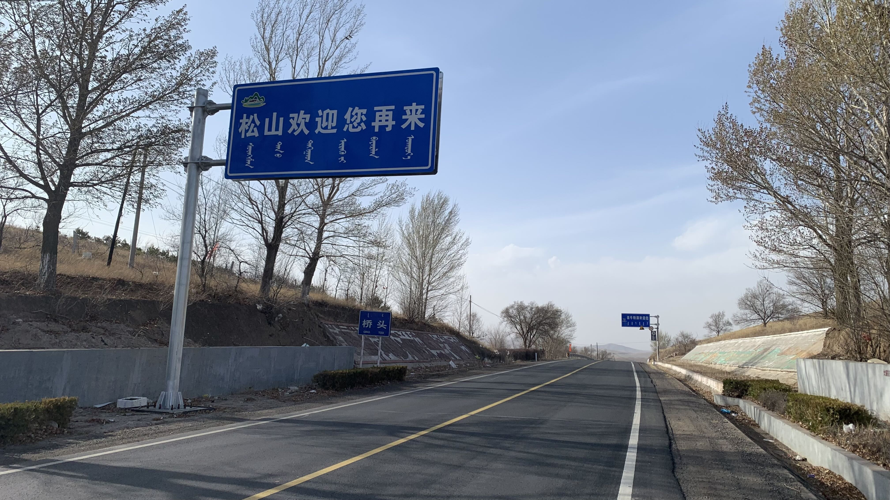
原來剛剛經過的地方叫松山，現在則是橋頭，下坡後就是翁牛特旗的範圍了。
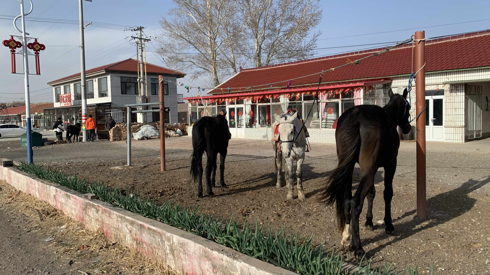
下午四點半抵達翁牛特旗邊緣的小鎮。前兩週看到許多圈養的牛羊和幾匹驢子，今日終於看到馬兒，而且看了很健康。
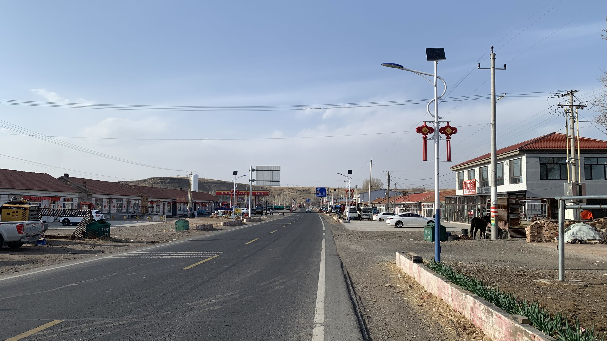
說是小鎮，其實就是由縣道旁的幾間住戶和商店組成。
看到對面有間超商馬上進去買了兩瓶小水，老闆算我5元，應該是至今最貴的。
超商對面有間看來乾淨且自帶前院的旅店，晚上可以直接騎上去調整把手。
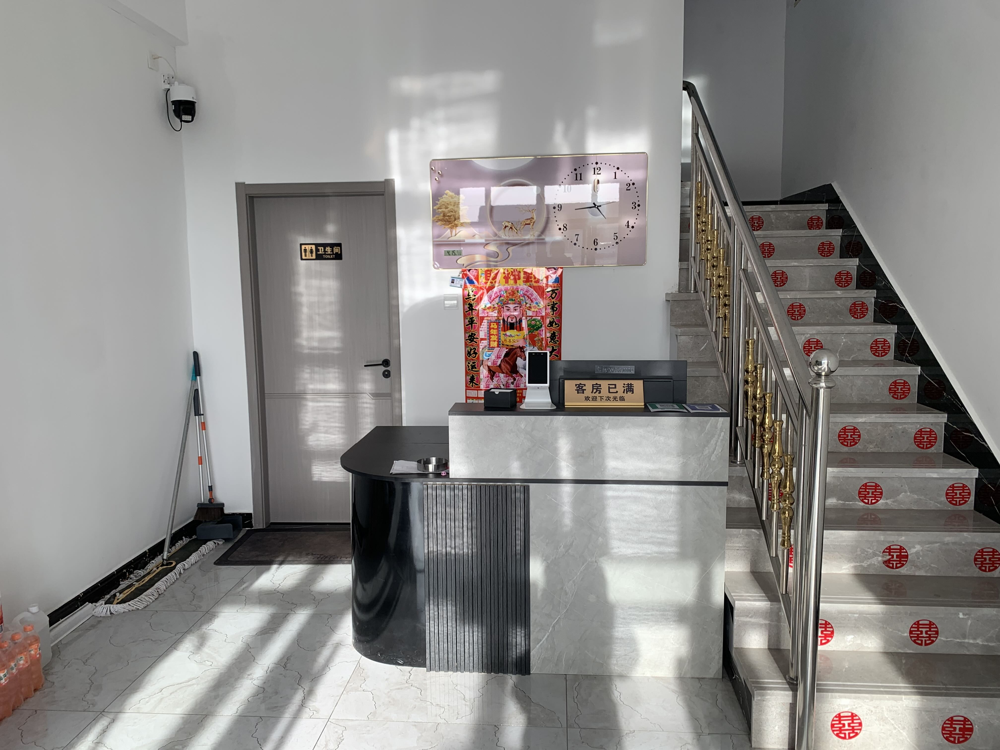
走進門一看櫃檯沒人，放了個客房已滿的牌子。詢問了路邊修車的大叔，大叔打電話把老闆叫回來，說還有房間讓我直接過去。
老闆嫌棄的說二十三號不能進屋，也不准靠著牆，會刮花他的磁磚。說明了椅墊是軟的，靠著不會有問題，才允許放在門口的走廊。有個奇怪的規定，如果要拿房間鑰匙鎖門就必須給押金，但老闆不一定在這，明天離開時找其他房客借電話打給他。有預感明早又要浪費時間找人，但是現在修車要緊，還是先住下了。
最後一週該趕路的關鍵期，今天卻只騎了50公里。騎車明顯感覺右邊握把不同，騎了十幾公里右手腕外側就開始疼痛，頸椎也出現異常疼痛感。右側果然沒有調整回來，實際上體感也知道自己的身體是歪的。
因為手掌的姿態詭異，手指要按變速器變得特別費力，爬坡變速往輕齒比每降一階就卡一次，出現很大的金屬聲，特定齒盤時鏈條會一直摩擦旁邊的金屬。之後幾天往蒙古高原的路上都是上坡，要趁今晚和明早優化自己的調整技巧。
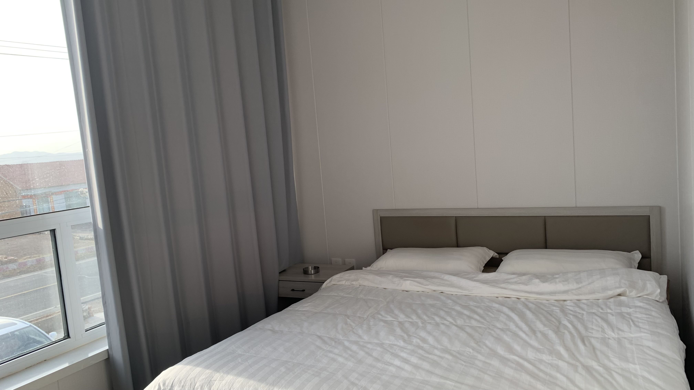
房間是乾淨的。躺在床上吃著豬肉乾，看YouTube影片學fitting。晚上九點半下樓試車，將煞變把螺絲轉到微鬆的狀態，以平常騎車的姿勢在院子裡騎著繞圈，讓把位隨著重量慢慢貼合手掌，直到兩隻手握住把手的感覺接近曾經的記憶，停下來鎖緊螺絲。今晚先這樣，明天早上睡醒再試著騎幾圈看看。
騎了兩千公里完全沒有任何疼痛的身體，今天右手和右肩痛到拿手機打字都不舒服。原本人車合一的張力平衡，變成我要用力對抗二十三號。自行車和人體果然都是經過精密計算才能實現的細緻動態幾何，自己隨意動手的結果就體現在今天的右手、右肩和頸椎刺痛與頭痛了。
今日花費： 午餐 18、水+咖啡 11、住宿 80元